;){kind=link}
Son las 11:46 de la noche y David le pregunta por mensaje a Alma: “¿Me quieres?”... Ella le contesta “Síííííí” y le manda un corazón. Es sábado 20 de septiembre, una semana antes de que él y sus otros compañeros se estrenen en la temporada. Es un adolescente imberbe, tiene cara de niño, habla de amor y juega con los Avispones de Chilpancingo, un equipo de la Tercera División.
Trac..trac, trac, trac, trac, trac…
Dos personas están detrás de una puerta blanca y con un celular graban el sonido de una balacera, las ráfagas son constantes, de diez o quince disparos y se cuentan al menos cincuenta tiros. Espacios de silencio y luego otra vez trac, trac trac, trac, trac…
“Se escucha súper cerca” dice quien está sosteniendo el móvil. Y allí, justamente muy cerca de esa casa, los chicos de Avispones –los que pudieron- se aventaron al piso, gritabaron, pero David murió. Su nombre completo: David Josue García Evangelista.
Habían ganado 3-1 como visitantes a Iguala FC y regresaban a casa. Horas antes, elementos de la policía municipal de Ayotiznapa e integrantes de la Escuela Normal Rural “Raúl Isidro Burgos” se habían enfrascado en una batalla. A las diez de la noche el autobús del equipo fue baleado. La hipótesis es que confundieron el camión de Avispones con el de los normalistas.
En Iguala y Chilpancingo la violencia es cotidiana. Ambos municipios del estado de Guerrero están entre los ocho primeros donde más homicidios dolosos ocurren en México, según las cifras oficiales.
En nuestro país hay cuatro divisiones profesionales de futbol -Liga MX, Ascenso MX, Segunda y Tercera- y de los 292 clubes que las integran, al menos 79 están en plazas de alto riesgo de acuerdo con datos sobre las entidades más violentas del Sistema Nacional de Seguridad. El peligro es para todos, también para el futbol.
Días después, los compañeros de David Josue, con la playera amarilla del club, custodiaban su féretro blanco rodeado de flores del mismo tono. Niños entre 13 y 18 años que hacían cosas de adultos y de mucho dolor: llorarle a un muerto. A David le gustaba Prince Royce y a Alma, su chica, también.
“Se escucha súper cerca” dice quien está sosteniendo el móvil. Y allí, justamente muy cerca de esa casa, los chicos de Avispones –los que pudieron- se aventaron al piso, gritabaron, pero David murió. Su nombre completo: David Josue García Evangelista.
Habían ganado 3-1 como visitantes a Iguala FC y regresaban a casa. Horas antes, elementos de la policía municipal de Ayotiznapa e integrantes de la Escuela Normal Rural “Raúl Isidro Burgos” se habían enfrascado en una batalla. A las diez de la noche el autobús del equipo fue baleado. La hipótesis es que confundieron el camión de Avispones con el de los normalistas.
En Iguala y Chilpancingo la violencia es cotidiana. Ambos municipios del estado de Guerrero están entre los ocho primeros donde más homicidios dolosos ocurren en México, según las cifras oficiales.
En nuestro país hay cuatro divisiones profesionales de futbol -Liga MX, Ascenso MX, Segunda y Tercera- y de los 292 clubes que las integran, al menos 79 están en plazas de alto riesgo de acuerdo con datos sobre las entidades más violentas del Sistema Nacional de Seguridad. El peligro es para todos, también para el futbol.
Días después, los compañeros de David Josue, con la playera amarilla del club, custodiaban su féretro blanco rodeado de flores del mismo tono. Niños entre 13 y 18 años que hacían cosas de adultos y de mucho dolor: llorarle a un muerto. A David le gustaba Prince Royce y a Alma, su chica, también.
“Lamentablemente te debo decir que te acostumbras”, dice Emilio Herrera, quien fue presidente del club Alianza Unetefan de Tercera División, un equipo que estaba en Apodaca, Nuevo León, otra zona complicada. Pero luego se corrige, “pero es que la vida tiene que seguir y la mejor manera de hacerlo es insistiendo en conservar nuestro espacios, que los chicos practiquen deporte para que se olviden de otras cosas ociosas”.
Juanfutbol y Mxsports realizaron el “Censo del Futbol Mexicano y zonas de alto riesgo”. Más de 79 clubes están en estas áreas. De cada diez equipos casi tres tienen su sede en lugares donde los índices de homicidios dolosos, secuestros, extorsiones o violaciones están entre los más altos de este país.
El caso de Avispones de Chilpancingo es particular. Casi todo el grupo VI de la Tercera División tiene una realidad complicada: son plazas con altos índices de violencia. Allí juegan, además de los Avispones de David, Iguala FC, Delfines de Acapulco, Real Acapulco, Bravos de Chilpancingo, Galeana Morelos y Atlético Cuernavaca.
El Consejo Ciudadano para la Seguridad Pública y Justicia Penal A.C hizo a finales del año pasado un listado de los municipios más peligrosos de México; y tomando en cuenta esa información, en 22 de los 30 ayuntamientos donde hay más actos violentos, se concentran 47 clubes de futbol profesional.
Edwin Solis, hermano de David Josue, escribió furioso a partir de un comentario que posteó el gobernador de Guerrero, Ángel Aguirre Rivero. “Cuál condeno ni que la chingada, ¿eso me va regresar a mi hermano? Aga (sic) algo mejor en vez de publicar tanta palabrería”.
Juanfutbol y Mxsports realizaron el “Censo del Futbol Mexicano y zonas de alto riesgo”. Más de 79 clubes están en estas áreas. De cada diez equipos casi tres tienen su sede en lugares donde los índices de homicidios dolosos, secuestros, extorsiones o violaciones están entre los más altos de este país.
El caso de Avispones de Chilpancingo es particular. Casi todo el grupo VI de la Tercera División tiene una realidad complicada: son plazas con altos índices de violencia. Allí juegan, además de los Avispones de David, Iguala FC, Delfines de Acapulco, Real Acapulco, Bravos de Chilpancingo, Galeana Morelos y Atlético Cuernavaca.
El Consejo Ciudadano para la Seguridad Pública y Justicia Penal A.C hizo a finales del año pasado un listado de los municipios más peligrosos de México; y tomando en cuenta esa información, en 22 de los 30 ayuntamientos donde hay más actos violentos, se concentran 47 clubes de futbol profesional.
Edwin Solis, hermano de David Josue, escribió furioso a partir de un comentario que posteó el gobernador de Guerrero, Ángel Aguirre Rivero. “Cuál condeno ni que la chingada, ¿eso me va regresar a mi hermano? Aga (sic) algo mejor en vez de publicar tanta palabrería”.
Los clubes en los municipios más peligrosos del país
Los clubes en los municipios más peligrosos del país
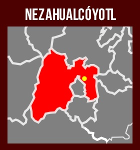
Toros Neza
Coyotes
Lobos
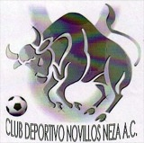
Novillos Neza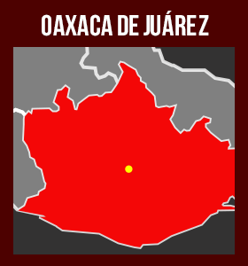
Alebrijes
Alebrijes NT
Tigres Dorados
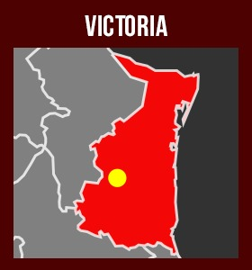
Correcaminos
Correcaminos NT
Correcaminos 3ra
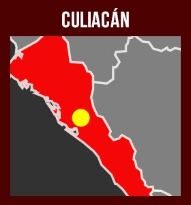
Dorados
Deportivo La Cruz
UA Sinaloa
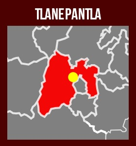
Real Olmeca
Futcenter
Independiente
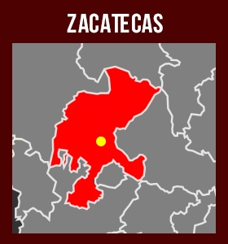
Mineros
UA Zacatecas 2da
UA Zacatecas 3ra
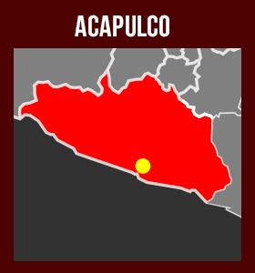
Internacional Acapulco
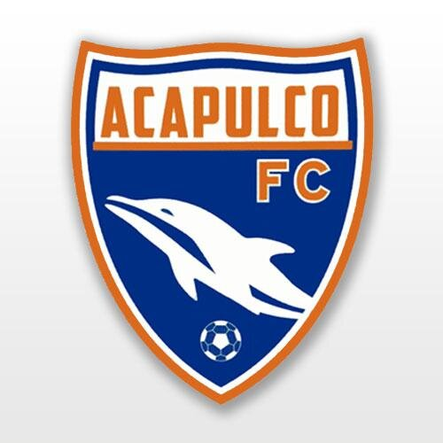
Acapulco FC Delfines de Acapulco
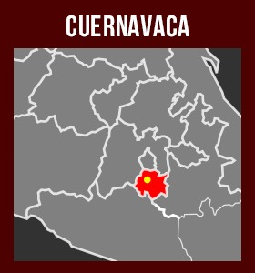

Galeana
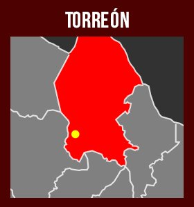
Santos Cuernavaca
San Isidro Laguna

Tolcayuca
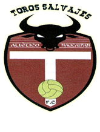
Toros Salvajes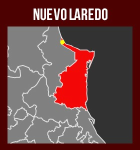
Bravos
Est Tec Nvo Laredo
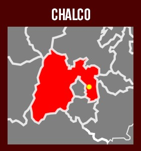

Vikingos de Chalco
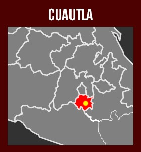
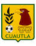
CuautlaCuautla UNILA
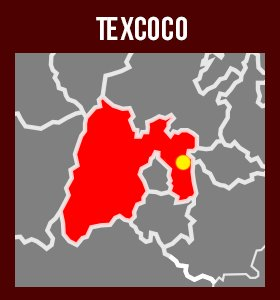
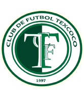
TexcocoPato Baeza
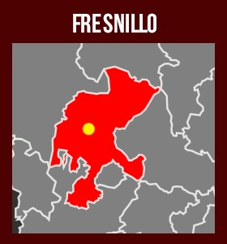
Mineros Fresnillo 2da
Mineros Fresnillo 3ra

Avispones Chilpancingo
Bravos de Chilp.
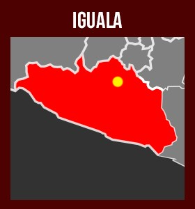
Iguala FC
Ajax Jiutepec

Xolos 3ra
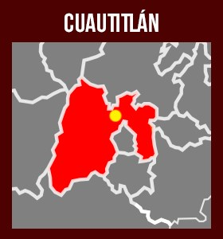
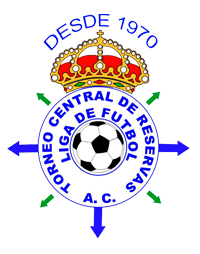
Real Cuautitlán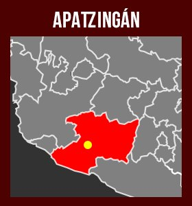
Limoneros
“A nosotros lo único que nos ocurrió fue que una vez un convoy de unas dies camionetas nos pasó a toda velocidad”, recuerda Emilio Herrera. Los clubes en las divisiones inferiores (Segunda y Tercera) se cuidan solos y han creado en algunos casos ciertas estrategias para viajar a diferentes zonas que son difíciles.
“Nosotros lo que hacíamos era que nos protegíamos a nosotros mismos, subíamos a Twitter dónde íbamos para estar localizables, preguntábamos cómo estaba la plaza antes de llegar y yo como presidente viajaba con los chicos para que los padres se sintieran seguros”, recuerda el ex directivo de Alianza Unetefan.
Además de David Josue, también murió el chófer que llevaba a los jugadores de los Avispones: Manuel Lugo Ortiz. Su hija Giane comentó: “Me dijo que volvería”… y no lo hizo.
En Nuevo Laredo, Tamaulipas, juegan los Bravos y en la línea de teléfono está el “Reportero X”. Por supuesto que él tiene nombre, apellido y trabaja para un periódico local e incluso después de colgar, no había tenido ningún problema para que apareciera su nombre.
“Pues aquí nadie se ha metido con el equipo. Todo está muy tranquilo. Alguna vez un entrenador que vino de fuera se asustó porque un helicóptero pasó cerca de su casa en un operativo, pero el club nunca se ha visto amenazado. Los malos no se meten con ellos”, dijo.
Minutos más tarde suena el teléfono y solicita: “Oye, mejor no des mi nombre, no vaya a ser, quiero estar tranquilo”…
Lo mismo ocurrió en la plaza de Victoria, Tamaulipas. Los reporteros deciden estar en el anonimato. En aquel lugar está el club Correcaminos y de acuerdo con los periodistas las recomendaciones generales que se les dan a los jugadores son: no transitar en determinadas zonas de la ciudad, no tomar llamadas donde no se identifiquen los números, no salir por las noches, estar el mayor tiempo posible con la familia.
“No es posible que nos quedemos en casa, tenemos que cuidarnos entre los clubes, entre nosotros, la Federación hace su parte y todos tenemos que hacer lo que nos corresponde, pero no quedarnos encerrados”, dice Emilio Herrera. En ocasiones ocurren sucesos como que Correcaminos es capaz de llenar su estadio en liguillas y los fans llegan a casa después de las 11 o 12 de la noche, casi tres horas después de la recomendación de las autoridades para estar en la calle.
Según Seguridad y Justicia, el año pasado hubo al menos 167 homicidios en Ciudad Victoria y 172 en Nuevo Laredo. “Te encargo mucho que no pongas mi nombre, perdón que insista”, dice el “Reportero X”.
A David Josue no sólo le llora su familia o su amada Alma, también otra chica. Se hace llamar en Facebook Liin Martiinez. Hasta el domingo pasado había posteado la frase: “Ya no sé qué sentir” y ha puesto un moño negro.
En la foto del moño muchos que han conocido la historia entre David y Liin saben que le duele. Alguien le ha preguntado qué ha pasado y ella atinó a decir: “se murió el amor de mi vida”.
A Liin y Alma se les ha ido el amor; para su familia, el hermano, el hijo, el sobrino, el primo; y para las autoridades un dato más que tendrá que llenar en los expedientes. El futbol tiene sus zonas de alto riesgo y entre Iguala y Guerrero no es raro que ocurra algo. Así es la realidad.
“Pues aquí nadie se ha metido con el equipo. Todo está muy tranquilo. Alguna vez un entrenador que vino de fuera se asustó porque un helicóptero pasó cerca de su casa en un operativo, pero el club nunca se ha visto amenazado. Los malos no se meten con ellos”, dijo.
Minutos más tarde suena el teléfono y solicita: “Oye, mejor no des mi nombre, no vaya a ser, quiero estar tranquilo”…
Lo mismo ocurrió en la plaza de Victoria, Tamaulipas. Los reporteros deciden estar en el anonimato. En aquel lugar está el club Correcaminos y de acuerdo con los periodistas las recomendaciones generales que se les dan a los jugadores son: no transitar en determinadas zonas de la ciudad, no tomar llamadas donde no se identifiquen los números, no salir por las noches, estar el mayor tiempo posible con la familia.
“No es posible que nos quedemos en casa, tenemos que cuidarnos entre los clubes, entre nosotros, la Federación hace su parte y todos tenemos que hacer lo que nos corresponde, pero no quedarnos encerrados”, dice Emilio Herrera. En ocasiones ocurren sucesos como que Correcaminos es capaz de llenar su estadio en liguillas y los fans llegan a casa después de las 11 o 12 de la noche, casi tres horas después de la recomendación de las autoridades para estar en la calle.
Según Seguridad y Justicia, el año pasado hubo al menos 167 homicidios en Ciudad Victoria y 172 en Nuevo Laredo. “Te encargo mucho que no pongas mi nombre, perdón que insista”, dice el “Reportero X”.
En la foto del moño muchos que han conocido la historia entre David y Liin saben que le duele. Alguien le ha preguntado qué ha pasado y ella atinó a decir: “se murió el amor de mi vida”.
A Liin y Alma se les ha ido el amor; para su familia, el hermano, el hijo, el sobrino, el primo; y para las autoridades un dato más que tendrá que llenar en los expedientes. El futbol tiene sus zonas de alto riesgo y entre Iguala y Guerrero no es raro que ocurra algo. Así es la realidad.
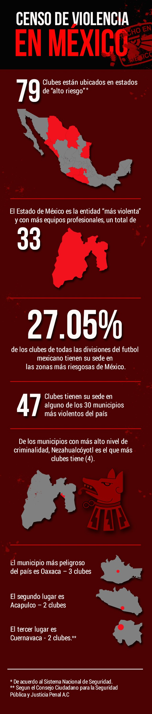
Mauricio Cabrera
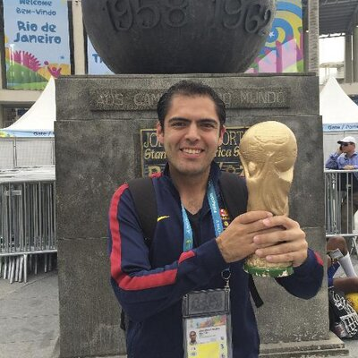
Maradona está equivocado. La pelota, pese al status de adoración que hemos decidido otorgarle, se mancha. A veces de trampa, otras de corrupción, algunas otras de engaño, y también de sangre. Pero ella, en eso Diego Armando acierta, es siempre inocente. Los cañones pueden retumbar, las calles apestar a pólvora y la sangre correr como símbolo de las muertes que acaban de ocurrir, ella (la pelota) o él (el balón), porque hasta en eso ha decidido ser políticamente correcta, seguirá rodando a la mínima provocación. Es polivalente. Lo mismo juega de distractor que de consuelo o de ejemplo de supervivencia. Si el aire nos da vida, la redonda nos da la sustancia del ocio para desear tenerla.
México está enfermo. El virus se respira y alcanza la pelota sin distingos de marca o material de fabricación. En un país que se ha convertido en terreno tan explosivo como el de las coordenadas del buscaminas, el esférico viaja del verde césped del Azteca a las ensangrentadas calles que dejan que la lluvia y el olvido se encarguen de la limpieza. Mientras siga ahí, habrá esperanza.
Nunca las palabras valdrán tanto como la vida. Menos los números, amigos de los analistas políticos y enemigos de los sentimientos. Con esos límites bien claros, queda este trabajo como testigo del México de los narcomensajes y las matanzas, de los peligros de una realidad que no interrumpe más el juego por un carro que invade la cancha, sino por metralletas que acribillan jugadores. Pero también, por esa inocencia que siempre habrá de admirarnos, de la reconstrucción, de la capacidad de adaptación y del indomable deseo de futbolistas bien y mal pagados por seguir jugando aunque el día a día se haya puesto más difícil que nunca. La pelota se mancha, y se seguirá manchando. Mal haría en dejar de rodar por miedo a que una bala la detenga. Si la perdemos a ella, lo habremos perdido casi todo.
México está enfermo. El virus se respira y alcanza la pelota sin distingos de marca o material de fabricación. En un país que se ha convertido en terreno tan explosivo como el de las coordenadas del buscaminas, el esférico viaja del verde césped del Azteca a las ensangrentadas calles que dejan que la lluvia y el olvido se encarguen de la limpieza. Mientras siga ahí, habrá esperanza.
Nunca las palabras valdrán tanto como la vida. Menos los números, amigos de los analistas políticos y enemigos de los sentimientos. Con esos límites bien claros, queda este trabajo como testigo del México de los narcomensajes y las matanzas, de los peligros de una realidad que no interrumpe más el juego por un carro que invade la cancha, sino por metralletas que acribillan jugadores. Pero también, por esa inocencia que siempre habrá de admirarnos, de la reconstrucción, de la capacidad de adaptación y del indomable deseo de futbolistas bien y mal pagados por seguir jugando aunque el día a día se haya puesto más difícil que nunca. La pelota se mancha, y se seguirá manchando. Mal haría en dejar de rodar por miedo a que una bala la detenga. Si la perdemos a ella, lo habremos perdido casi todo.
@macafut